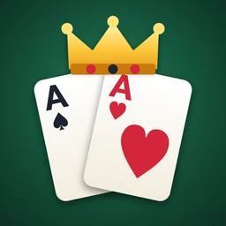
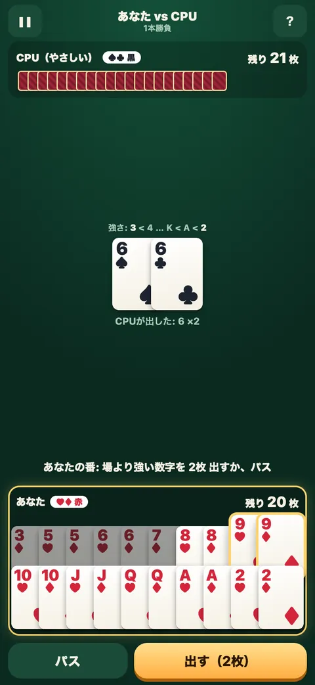
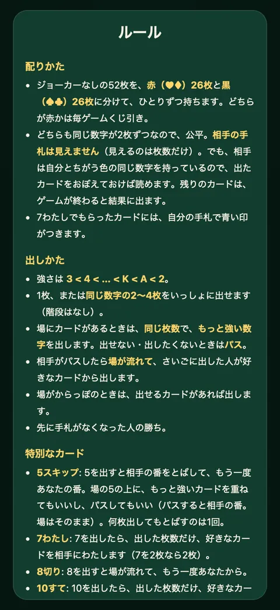
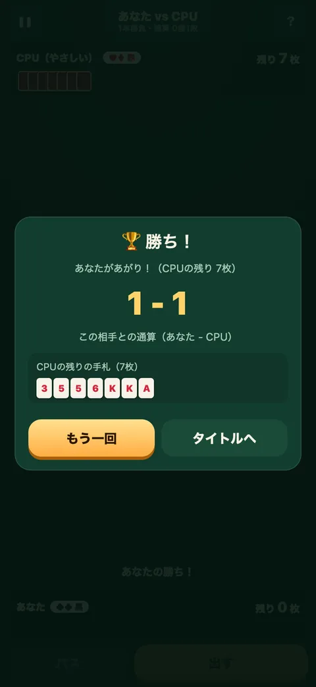
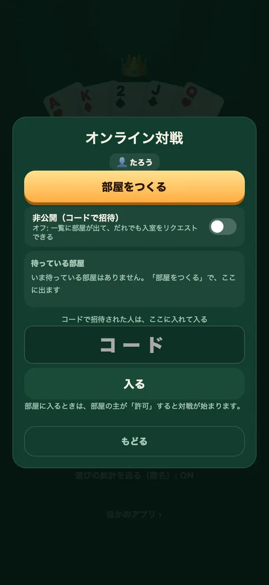
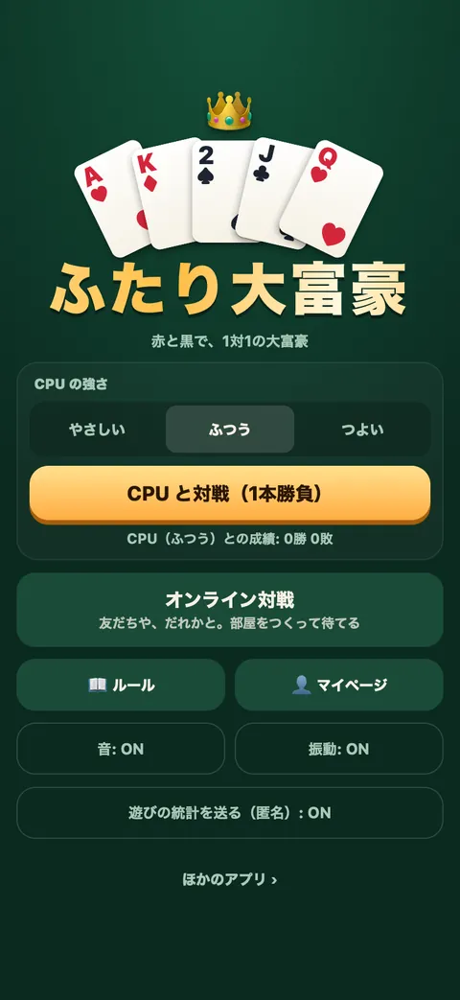

1対1の大富豪（iPhone）
ふたり大富豪
赤と黒で配る、
ふたりだけの大富豪。
52枚を「赤（♥♦）」と「黒（♠♣）」に分けて、ひとりずつ持ちます。どちらも同じ数字が2枚ずつだから公平。出たカードをおぼえて、相手の残りを読む。CPU やオンラインで遊べます。
- 1対1の大富豪
- CPU 3段階
- オンライン対戦
- 1ゲーム3〜5分
無料・広告あり／iPhone（iOS 18 以降）
▶ プレイのようす（音なし）
ふたり大富豪とは？
ふたり大富豪は、ジョーカーなしの52枚を赤と黒に分けて、ふたりで遊ぶ大富豪。5スキップ・7わたし・8切り・10すて・イレブンバック・革命入り。CPU（3段階）や、部屋をつくって友達とオンライン対戦。無料（広告あり）のiPhoneアプリ（近日公開）。
こんな人に：大富豪（大貧民）のルールを知っている人。
- 料金無料・広告あり
- 対応iPhone（iOS 18 以降）
- ジャンル⚔️ 対戦





← 横にスクロールできます →
部屋をつくって、友達と1対1
- 登録・ログイン不要部屋をつくると、待っている部屋の一覧に出ます。入室のリクエストを「許可」すると対戦スタート。非公開の部屋は5文字のコードで招待。
- 1本勝負をくり返す1ゲームで勝負。「もう一回」では負けた人が先手になって、同じ相手との通算の勝ち数が出ます。
- スタンプで あいさつ対戦中は決まった10種類のスタンプだけ。いやな名前は通報・非表示にできます。
CPU は やさしい・ふつう・つよい の3段階。ひとりでも腕だめしできます。
こんな人におすすめ
- 大富豪（大貧民）のルールを知っている人
- 2人でサクッと遊べるトランプゲームを探している人
- 相手の手を読むのが好きな人
遊び方は3ステップ
- 赤と黒で配る52枚を赤（♥♦）と黒（♠♣）に分けて、ひとり26枚ずつ。どちらが赤かはくじ引き。
- 同じ枚数で強く場と同じ枚数で、もっと強い数字を出します（3 < 4 < … < A < 2）。出せないときはパス。
- 先にあがれば勝ち特別なカード（5・7・8・10・J・革命）を使って、先に手札をなくしたほうの勝ち。
📘 ルール
赤と黒で配る
ジョーカーなしの52枚を、赤（♥♦）26枚と黒（♠♣）26枚に分けて、ひとりずつ持ちます。どちらも同じ数字が2枚ずつなので公平。相手の手札は見えません。
同じ枚数で、もっと強く
強さは 3 < 4 < … < K < A < 2。1枚か、同じ数字の2〜4枚をいっしょに出します。場と同じ枚数で、もっと強い数字を。出せないときはパス。相手がパスしたら場が流れます。
特別なカード
5スキップ（もう一度自分の番）・7わたし（相手にカードをわたす）・8切り（場が流れる）・10すて（カードをすてる）・イレブンバック（場が流れるまで強さが逆）・革命（同じ数字4枚で強さが逆）。
あがれないカード
さいごの1手には、いちばん強い数字（ふだんは2）・5・7・8・10・J・革命は出せません。特別なカードは早めに使うのがコツ。
特徴
- 2人で遊ぶ大富豪同じ数字が2枚ずつで公平
- 6つの特別なルール5スキップ・7わたし・8切り・10すて・イレブンバック・革命
- 3段階の CPUやさしい・ふつう・つよい
- 10種類のスタンプオンライン対戦であいさつ
ふたり大富豪 を無料で遊んでみる
App Store で近日公開無料・広告あり／iPhone（iOS 18 以降）
💬 よく聞かれること
2人で遊べる大富豪のアプリは？
ふたり大富豪は、ジョーカーなしの52枚を赤（♥♦）と黒（♠♣）に分けて、1対1で遊ぶ大富豪の iPhone アプリです。CPU（3段階）や、部屋をつくって友達とオンラインで遊べます（近日公開）。
くわしい遊び方
ジョーカーなしの52枚を、赤（♥♦）26枚と黒（♠♣）26枚に分けて、ひとりずつ持ちます。強さは 3 < 4 < … < K < A < 2。1枚、または同じ数字の2〜4枚をいっしょに出し、場と同じ枚数で、もっと強い数字を出していきます。先に手札がなくなったほうの勝ちです。
- 特別なカード：5スキップ（もう一度自分の番）／7わたし（出した枚数だけ相手にわたす）／8切り（場が流れる）／10すて（出した枚数だけすてる）／イレブンバック（場が流れるまで強さが逆）／革命（同じ数字4枚で強さが逆）
- あがれないカード：さいごの1手には、いちばん強い数字（ふだんは2）・5・7・8・10・J・革命は出せません
- モード：CPU 対戦（やさしい・ふつう・つよい）／オンライン対戦（部屋をつくって待つ・待っている部屋に入室をリクエスト・非公開の部屋は5文字のコード）
よくある質問
無料ですか？
はい、無料でダウンロードして遊べます（広告あり）。App Store で近日公開です。
どの端末で使えますか？
iPhone（iOS 18 以降）で使えます。Android 版はありません。
オンライン対戦のやり方
1人が「オンライン対戦」→「部屋をつくる」を押します。もう1人の「待っている部屋」の一覧に部屋が出るので、押して入室をリクエストします。部屋をつくった人が「許可」すると始まります。「非公開」にした部屋は一覧に出ないので、5文字のコードを送って、相手に「入る」で入ってもらいます。登録やログインはいりません。
入室のリクエストに返事がない・部屋が見つからない
部屋をつくった人がアプリを閉じたか、コードがまちがっている可能性があります。部屋をつくった人の画面が開いたままになっているか確かめて、もう一度ためしてください。リクエストは30秒たつと自動でおことわりになります。
対戦中に相手の接続が切れた
しばらく待つと、つながり直したところから続きます。45秒ほど待っても相手がもどらないときは、タイトルにもどります。電波のよいところで、もう一度部屋をつくってください。
カードが出せない
場と同じ枚数で、もっと強い数字しか出せません。また、手札がなくなる「さいごの1手」には、あがれないカード（いちばん強い数字・5・7・8・10・J・革命）は出せません。「出す」を押すと、出せないわけが出ます。
いやな名前の人がいた
相手の名前の「通報」から「通報・非表示」を押すと、その人の名前と部屋は、あなたの iPhone では出なくなります。マイページの「非表示にした人を元にもどす」で、全部もどせます。
音や振動を止めたい
タイトル画面の「音」「振動」のボタンで、オン・オフを切り替えられます。
成績を消したい
CPU との成績や名前は、この iPhone の中にだけ保存しています。アプリを削除すると成績も消えます。
お問い合わせ
不具合やご要望は、メールでお知らせください。お使いの iPhone の機種と iOS のバージョンを書いていただけると助かります。